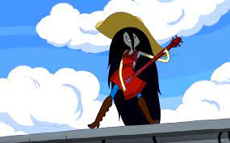

Marceline
Rainha dos Vampiros
Vampira | Musicista | 1000+ anos
Biografia
Apesar de sua primeira aparição como antagonista, Marceline se torna amiga próxima de Finn e Jake, evoluindo sua personalidade e relacionamentos.
Ao contrário dos vampiros convencionais, se alimenta da cor vermelha. É uma ávida musicista e cantora.
Tem uma pele acinzentada clara, orelhas pontudas herdadas do pai, cabelos pretos azulados longos até os pés e marcas de mordida no pescoço.
Habilidades & Poderes
🧛♀️ Vampira
Imortal, voo, regeneração e força sobre-humana
🎸 Musicista
Usa uma guitarra demoníaca e é uma compositora talentosa
❤️ Cor Vermelha
Se alimenta de vermelho (não sangue)